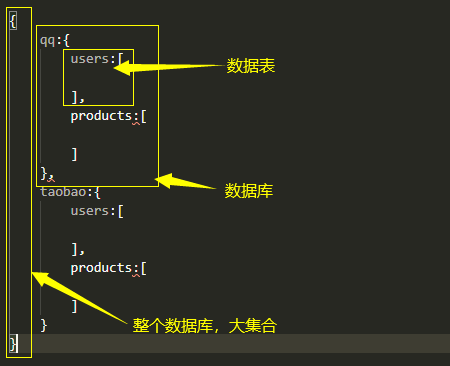
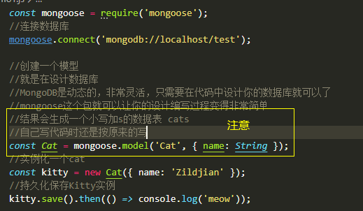
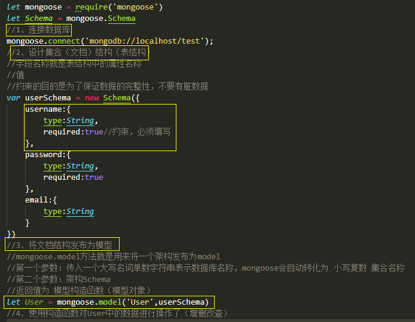
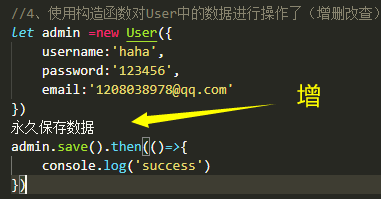
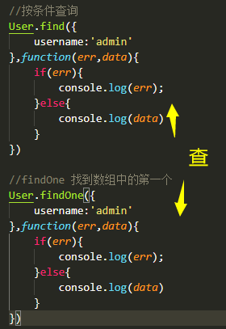
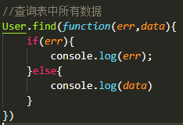
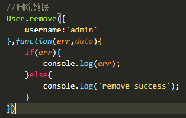
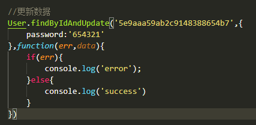

MongoDB数据库简介
MongoDB 是一个基于分布式文件存储的数据库。由 C++ 语言编写。旨在为 WEB 应用提供可扩展的高性能数据存储解决方案。
MongoDB 是一个介于关系数据库和非关系数据库之间的产品，是非关系数据库当中功能最丰富，最像关系数据库的。
MongoDB 是一个数据大集合，一种文档
MongoDB数据库理解

配置及开关进退
进入mongodb根目录下的bin目录，将路径配置进用户环境变量中
在其他位置新建一个目录data 进入后在新建db文件夹 用于存放数据 规定
启动：mongod
停止：ctrl + cc
修改默认的数据存储目录：mongod --dbpath=数据存储目录路径 一般也不改
连接：mongo
退出：exit
基本命令
show dbs ： 查看显示所有数据库（默认有3个数据库，不能动）
db ： 查看当前操作的数据库
use 数据库名称 ： 切换到指定数据库（如果没有会新建）
插入数据：往当前数据库插入students数据 ： db.students.insertOne({"name":"小明"})
查看当前数据库数据表：show collections
查看当前数据库中数据表中内容：db.students.find()
Node中如何操作MongoDB
使用官方操作包
安装
npm install mongodb --save比较原生，一般不是首选
使用第三方操作包
安装
npm install mongoose --save他是基于mongodb包再一次封装的，一般使用这个操作
使用了mongoose，基本上就是API操作了，相关API请进官方网站
http://www.mongoosejs.net/
mongoose操作
简单示例

*注意：
1）mongodb不需要设计表结构，但也因此不要乱存
2）指定连接的数据库不存在，当你插入第一条数据之后就会自动创建出来
基本增删改查操作






未完待续~~~